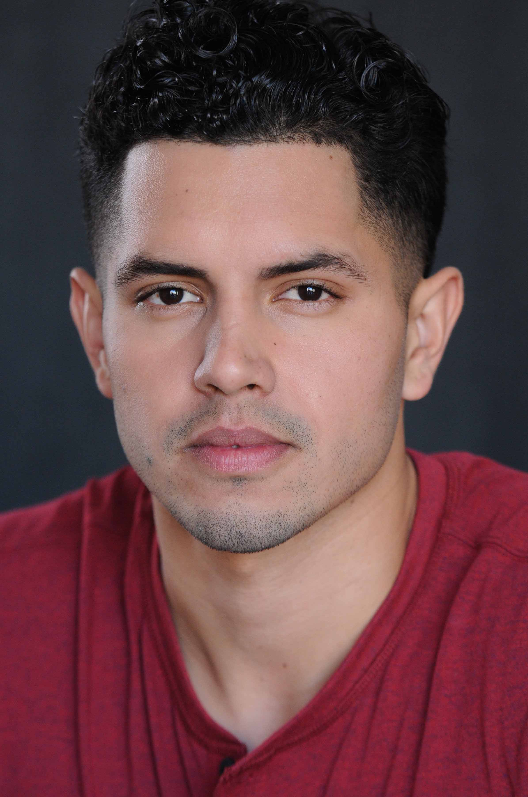

About Me
Degree: Bachelor of Arts Major: Journalism (Photojournalism)-BA, Minor: Business Administration-MN, San Francisco State University.
27 years old. Bay Area based freelance digital artist, photographer, visual-journalist, whose work has been published by Major League Baseball, SF Giants, Xpress Newspaper and Magazine along with Timberland Co. and Santa Cruz Blog. Photography that is passionately driven by creativity and the collective view of our world.
I love to create, learn, and grow which brings me to my lastest challenge in life... web development. Cheers!